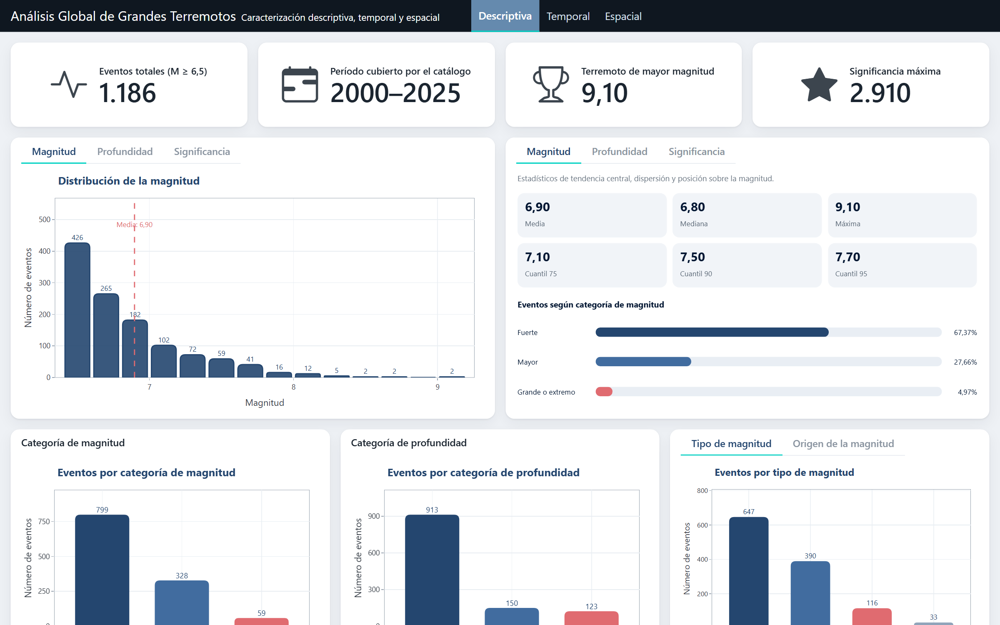
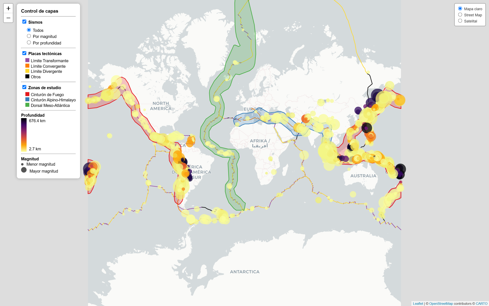

Este proyecto caracteriza dónde, cuándo y con qué intensidad ocurren los grandes terremotos del planeta, y contrasta las diferencias entre el Cinturón de Fuego del Pacífico, el Cinturón Alpino-Himalayo, la Dorsal Meso-Atlántica y el resto del mundo.

🖥️ Dashboard interactivo
Indicadores del catálogo, distribución de magnitud, profundidad y significancia, evolución temporal y comparación entre zonas, con filtros y gráficos interactivos.
Abrir dashboard
🗺️ Mapa interactivo
Los 1.186 sismos sobre el mapa mundial: tamaño según magnitud, color según profundidad, límites de placas tectónicas y zonas de estudio delimitadas en QGIS.
Abrir mapa📄 Informes en PDF
- Pre-Informe Asesoría 1Exploración inicial del catálogo
- Informe Asesoría 1Caracterización descriptiva, temporal y espacial
- Informe Asesoría 2Análisis inferencial y clasificación de zonas